第 1 次课 · 12-04（第 14 周，4 学时）
Pandas 总复习（总分总）＋ 练习一（教材例题改编，21 小问）＋ 练习二（订单 lx2，10 小问）
先用「总分总」把第 8 章串成一条流水线，再拿两套订单数据动手做练习；后半段把第 9 章六类图、Matplotlib 与 Pandas 绘图一次走完——数据准备好，最后一步是把结论画出来。
第 14—16 周 · 10 学时 · 复习 + 两套练习（12-04）→ 第 9 章数据可视化（12-11 / 12-18）
本页覆盖第 9 次课的三次课：12-04 先复习 + 两套练习（4 学时，上机），12-11 起讲第 9 章数据可视化（12-11 四学时、12-18 两学时）。页面内容已按这个顺序排好，复习、练习、可视化三个模块都在同一页，可以按进度预习或回看。
Pandas 总复习（总分总）＋ 练习一（教材例题改编，21 小问）＋ 练习二（订单 lx2，10 小问）
第 9 章 数据可视化：9.1 图表类型与构成、9.2 Matplotlib（折线 / 柱状 / 条形 / 饼 / 散点 / 直方 / 箱线）、9.3 Pandas 绘图
9.4 可视化应用案例（订单数据全流程）＋ 期末复习安排
一条流水线 6 步、8 个动作、8 个高频坑、一张对比表 + 5 题快问快答。后半段配 10 个可单步播放的动画，把容易混的地方再走一遍。
教材例题改编，订单.xlsx（310 行）。四段 21 小问：导入查看 → 预处理 → 查询 → 汇总与透视，最后画两张图并导出 Excel。
换一套数据（订单_lx2.xlsx，24 行）限时重做：查询、统计、分档、透视、柱状图、导出。检验「换数据还会不会」。
9.1：七类常用图怎么选、figure/axes 里有什么、画图四步；配「图表选型器」交互面板。
9.2：中文字体两行设置，plot / bar / barh / pie / scatter / hist 六类图逐例代码 + 本机实图。
9.3：索引即 x、列即系列，一行 plot(kind=…) 出图；groupby / pivot_table 的结果直接画。
9.4：折线看趋势并标极值、散点看关系、气泡看三维、箱线看分布，最后用两句话解读。
两套练习的数据与答案、页面精简数据、第 9 章可视化示例代码与产量数据、说明文档和 zip，全部可下载。
df[0]、多条件不加括号、链式赋值、inplace=True 返回值、透视表默认均值、margins 多出的 All、pd.cut 边界、merge 行数膨胀。savefig）。plot(kind=…) 画出来，并配一句结论。| 时间 | 环节 | 做什么 | 产出 |
|---|---|---|---|
| 0—10 min | 开场 | 今天路线 + 两套练习的目标与评分点 | 知道要交什么 |
| 10—50 min | 复习·总 | 流水线图 + 8 个动作表 | 能说出 6 步 |
| 50—95 min | 复习·分 | 8 个高频坑逐个对照（错误写法 → 正确写法 → 记忆句），穿插动画 | 能改 8 类错 |
| 95—105 min | 复习·总 | 对比总表 + 5 题快问快答 + 两个交互面板 | 能讲清 9 组区别 |
| 105—150 min | 练习一 | 按四段推进，每段先讲 1 题再放手做 | 完成 21 小问 |
| 150—180 min | 练习二 | 限时 20 分钟独立做，10 分钟讲评 | 完成 10 小问 |
| 180 min | 收尾 | 易错清单 + 作业 + 12-11 预告 | 带着问题下课 |
12-11 的 4 学时按「9.1 选图 → 9.2 六类图各写一遍 → 9.3 Pandas 一行出图」推进，每个例子先看页面实图、再抄代码跑一遍；12-18 的 2 学时用 9.4 的应用案例串起来，并安排期末复习。
一条流水线 · 八个动作 · 八个高频坑 · 一张对比表 + 5 题快问快答 · 10 个可复用动画
第 8 章八个知识模块，其实就是这张表里的八个动作。复习时不要按章节背，按数据从进来到出去的顺序记：
| 动作 | 代表 API | 一句话 | 最常踩的坑 |
|---|---|---|---|
| 建 | Series(...) · DataFrame(...) | 带标签的一维 / 二维表 | 把 Series 当成普通列表 |
| 看 | shape · info() · describe() · head() | 先看形状和类型，再谈计算 | 只看 head 不看 dtype |
| 取 | df[] · loc · iloc · at · iat | 名字用 loc，位置用 iloc | df[0] 想取第一行 |
| 改 | 直接赋值 · loc[行,列] · drop · sort_values | 一步定位再赋值 | 链式赋值改不动 |
| 洗 | isnull · dropna · fillna · duplicated · drop_duplicates | 先体检，再动刀 | inplace=True 返回值是 None |
| 查 | 布尔索引 · & | ~ · between · isin · nlargest | 条件是布尔数组 | 多条件不加括号 / 用 and 连接 |
| 聚 | groupby + agg · pd.cut · pivot_table | 分组 → 聚合 → 透视 | 透视表默认均值 / margins 多 All |
| 合 | concat · merge(how=...) | 上下拼用 concat，按键配用 merge | merge 后行数膨胀 |
下面八个坑来自第 8 章的课堂练习与作业。每个坑给三样东西：学生真实写法 → 正确写法 → 一句话记忆。左边红框是会出错的写法，右边绿框是正确写法，别混。
Series 只有两部分：index（标签）+ values（值）；DataFrame 是三部分：行标签 index + 列标签 columns + 值矩阵 values。很多题出错不是 API 写错，而是把「标签」当成了「位置」。
s = pd.Series([93, 89, 80, 92]) print(s[1]) # 90 分的那个人？不，是「标签 1」
s = pd.Series([93, 89, 80, 92], index=['语文','数学','英语','Python']) print(s['数学']) # 89 print(s.iloc[1]) # 89（第 2 个位置）
s[数字] 就变成「按标签找」。df[]、loc、iloc 三个入口取列用 df['列名']，按名字取行用 loc，按位置取行用 iloc。最典型的错误是 df[0] 想取第一行——它会去找列名 0，直接 KeyError。
import pandas as pd
from io import StringIO
csv = """订单编号,订单日期,用户ID,商品名称,单价,数量,金额
302001,2021-02-01,137401,围巾,21.6,12,259.2
302002,2021-02-01,177562,运动服,210.0,7,1470.0
302003,2021-02-01,133422,T恤,55.93,24,1342.32
302004,2021-02-05,138462,运动服,178.5,24,4284.0
302005,2021-02-05,158949,T恤,65.8,14,921.2
302006,2021-02-08,120957,卫衣,126.5,15,1897.5
302006,2021-02-08,120957,卫衣,126.5,15,1897.5
302008,2021-02-12,186059,T恤,65.8,5,329.0
302009,2021-02-15,199357,,,,540.0
302010,2021-02-20,149590,休闲鞋,162.0,30,4860.0
302011,2021-02-25,149590,运动服,178.5,0,0.0
302012,2021-02-28,137401,围巾,21.6,25,540.0"""
df = pd.read_csv(StringIO(csv), parse_dates=['订单日期'])
print('df[\'商品名称\'] 是一列：')
print(df['商品名称'].head(3))
print('类型：', type(df['商品名称']).__name__, '，长度', len(df['商品名称']))
print('\ndf.loc[2] 是第 2 号标签这一行：')
print(df.loc[2])
print('\n df.iloc[2] 是第 3 个位置这一行（本表默认索引时与 loc[2] 相同）：')
print(df.iloc[2].to_dict())
print('\n df[0] 会怎样：')
try:
df[0]
except Exception as e:
print(type(e).__name__, ':', e)
df['商品名称'] 是一列：
0 围巾
1 运动服
2 T恤
Name: 商品名称, dtype: str
类型： Series ，长度 12
df.loc[2] 是第 2 号标签这一行：
订单编号 302003
订单日期 2021-02-01 00:00:00
用户ID 133422
商品名称 T恤
单价 55.93
数量 24.0
金额 1342.32
Name: 2, dtype: object
df.iloc[2] 是第 3 个位置这一行（本表默认索引时与 loc[2] 相同）：
{'订单编号': 302003, '订单日期': Timestamp('2021-02-01 00:00:00'), '用户ID': 133422, '商品名称': 'T恤', '单价': 55.93, '数量': 24.0, '金额': 1342.32}
df[0] 会怎样：
KeyError : 0
print(df[0]) # KeyError: 0
df.loc[0] # 标签 0 这一行 df.iloc[0] # 第 1 个位置这一行 df[0] # 只有在列名恰好是 0 时才是取列
df[ ] 优先找列；要行就用 loc / iloc。行索引是 0..n-1 时两者结果一样，但不是一回事。比较运算返回的是布尔数组，& 的优先级比比较运算符高，所以 df.a > 1 & df.b < 2 会先算 1 & df.b，报 TypeError。每个条件都要用括号包起来。
import pandas as pd
from io import StringIO
csv = """订单编号,订单日期,用户ID,商品名称,单价,数量,金额
302001,2021-02-01,137401,围巾,21.6,12,259.2
302002,2021-02-01,177562,运动服,210.0,7,1470.0
302003,2021-02-01,133422,T恤,55.93,24,1342.32
302004,2021-02-05,138462,运动服,178.5,24,4284.0
302005,2021-02-05,158949,T恤,65.8,14,921.2
302006,2021-02-08,120957,卫衣,126.5,15,1897.5
302006,2021-02-08,120957,卫衣,126.5,15,1897.5
302008,2021-02-12,186059,T恤,65.8,5,329.0
302009,2021-02-15,199357,,,,540.0
302010,2021-02-20,149590,休闲鞋,162.0,30,4860.0
302011,2021-02-25,149590,运动服,178.5,0,0.0
302012,2021-02-28,137401,围巾,21.6,25,540.0"""
df = pd.read_csv(StringIO(csv), parse_dates=['订单日期'])
mask = (df['单价'] > 150) & (df['数量'] >= 10)
print('命中行数：', mask.sum())
print(df[mask][['订单编号', '商品名称', '单价', '数量']])
print('\n等价写法（between / isin 也是同一个布尔数组）：')
print(df[(df['数量'] >= 10) & (df['数量'] <= 30)]['订单编号'].tolist())
print(df[df['商品名称'].isin(['围巾', '运动服'])]['订单编号'].tolist())
命中行数： 2
订单编号 商品名称 单价 数量
3 302004 运动服 178.5 24.0
9 302010 休闲鞋 162.0 30.0
等价写法（between / isin 也是同一个布尔数组）：
[302001, 302003, 302004, 302005, 302006, 302006, 302010, 302012]
[302001, 302002, 302004, 302011, 302012]
import pandas as pd from io import StringIO csv = """订单编号,订单日期,用户ID,商品名称,单价,数量,金额 302001,2021-02-01,137401,围巾,21.6,12,259.2 302002,2021-02-01,177562,运动服,210.0,7,1470.0 302003,2021-02-01,133422,T恤,55.93,24,1342.32 302004,2021-02-05,138462,运动服,178.5,24,4284.0 302005,2021-02-05,158949,T恤,65.8,14,921.2 302006,2021-02-08,120957,卫衣,126.5,15,1897.5 302006,2021-02-08,120957,卫衣,126.5,15,1897.5 302008,2021-02-12,186059,T恤,65.8,5,329.0 302009,2021-02-15,199357,,,,540.0 302010,2021-02-20,149590,休闲鞋,162.0,30,4860.0 302011,2021-02-25,149590,运动服,178.5,0,0.0 302012,2021-02-28,137401,围巾,21.6,25,540.0""" df = pd.read_csv(StringIO(csv), parse_dates=['订单日期']) print(df['单价'] > 150 & df['数量'] >= 10)
Traceback (most recent call last):
File "C:\Users\Legion\AppData\Local\Programs\Python\Python314\Lib\site-packages\pandas\core\ops\array_ops.py", line 374, in na_logical_op
result = op(x, y)
File "C:\Users\Legion\AppData\Local\Programs\Python\Python314\Lib\site-packages\pandas\core\roperator.py", line 55, in rand_
return operator.and_(right, left)
TypeError: ufunc 'bitwise_and' not supported for the input types, and the inputs could not be safely coerced to any supported types according to the casting rule ''safe''
During handling of the above exception, another exception occurred:
Traceback (most recent call last):
File "C:\Users\Legion\AppData\Local\Programs\Python\Python314\Lib\site-packages\pandas\core\ops\array_ops.py", line 388, in na_logical_op
result = libops.scalar_binop(x, y, op)
File "pandas/_libs/ops.pyx", line 178, in pandas._libs.ops.scalar_binop
ValueError: Buffer dtype mismatch, expected 'Python object' but got 'double'
The above exception was the direct cause of the following exception:
Traceback (most recent call last):
File "<pyshell>", line 19, in <module>
print(df['单价'] > 150 & df['数量'] >= 10)
File "C:\Users\Legion\AppData\Local\Programs\Python\Python314\Lib\site-packages\pandas\core\ops\common.py", line 85, in new_method
return method(self, other)
File "C:\Users\Legion\AppData\Local\Programs\Python\Python314\Lib\site-packages\pandas\core\arraylike.py", line 76, in __rand__
return self._logical_method(other, roperator.rand_)
File "C:\Users\Legion\AppData\Local\Programs\Python\Python314\Lib\site-packages\pandas\core\series.py", line 6746, in _logical_method
res_values = ops.logical_op(lvalues, rvalues, op)
File "C:\Users\Legion\AppData\Local\Programs\Python\Python314\Lib\site-packages\pandas\core\ops\array_ops.py", line 464, in logical_op
res_values = na_logical_op(lvalues, rvalues, op)
File "C:\Users\Legion\AppData\Local\Programs\Python\Python314\Lib\site-packages\pandas\core\ops\array_ops.py", line 397, in na_logical_op
raise TypeError(
...<2 lines>...
) from err
TypeError: Cannot perform 'rand_' with a dtyped [float64] array and scalar of type [bool]
& | ~，每个条件各加一对括号，不要用 and / or / not。pandas 3 默认写时复制（Copy-on-Write），df[df.x > 1]['y'] = 0 改的是临时副本，原表不会变；正确写法是把行列条件放进同一个 .loc[行, 列]。
import pandas as pd
from io import StringIO
csv = """订单编号,订单日期,用户ID,商品名称,单价,数量,金额
302001,2021-02-01,137401,围巾,21.6,12,259.2
302002,2021-02-01,177562,运动服,210.0,7,1470.0
302003,2021-02-01,133422,T恤,55.93,24,1342.32
302004,2021-02-05,138462,运动服,178.5,24,4284.0
302005,2021-02-05,158949,T恤,65.8,14,921.2
302006,2021-02-08,120957,卫衣,126.5,15,1897.5
302006,2021-02-08,120957,卫衣,126.5,15,1897.5
302008,2021-02-12,186059,T恤,65.8,5,329.0
302009,2021-02-15,199357,,,,540.0
302010,2021-02-20,149590,休闲鞋,162.0,30,4860.0
302011,2021-02-25,149590,运动服,178.5,0,0.0
302012,2021-02-28,137401,围巾,21.6,25,540.0"""
df = pd.read_csv(StringIO(csv), parse_dates=['订单日期'])
df['标记'] = '普通'
df[df['金额'] > 4000]['标记'] = '大单'
print('链式赋值后，大单有几行：', (df['标记'] == '大单').sum())
df['标记'] = '普通'
df.loc[df['金额'] > 4000, '标记'] = '大单'
print('loc 一步定位后，大单有几行：', (df['标记'] == '大单').sum())
print(df.loc[df['金额'] > 4000, ['订单编号', '金额', '标记']])
链式赋值后，大单有几行： 0
loc 一步定位后，大单有几行： 2
订单编号 金额 标记
3 302004 4284.0 大单
9 302010 4860.0 大单
df[df['金额'] > 4000]['标记'] = '大单'
df.loc[df['金额'] > 4000, '标记'] = '大单'
df.loc[行条件, 列名] = 新值，中间不要再套一层 [ ]。inplace 的返回值先用 isnull().any() 看哪列缺，再决定删还是填：dropna() 默认删「任一列有缺失」的整行，fillna() 按策略填。最要命的是把 inplace=True 的返回值又赋给了变量。
import pandas as pd
from io import StringIO
csv = """订单编号,订单日期,用户ID,商品名称,单价,数量,金额
302001,2021-02-01,137401,围巾,21.6,12,259.2
302002,2021-02-01,177562,运动服,210.0,7,1470.0
302003,2021-02-01,133422,T恤,55.93,24,1342.32
302004,2021-02-05,138462,运动服,178.5,24,4284.0
302005,2021-02-05,158949,T恤,65.8,14,921.2
302006,2021-02-08,120957,卫衣,126.5,15,1897.5
302006,2021-02-08,120957,卫衣,126.5,15,1897.5
302008,2021-02-12,186059,T恤,65.8,5,329.0
302009,2021-02-15,199357,,,,540.0
302010,2021-02-20,149590,休闲鞋,162.0,30,4860.0
302011,2021-02-25,149590,运动服,178.5,0,0.0
302012,2021-02-28,137401,围巾,21.6,25,540.0"""
df = pd.read_csv(StringIO(csv), parse_dates=['订单日期'])
df1 = df.copy()
result = df1.dropna(inplace=True)
print('inplace 的返回值：', result, '（类型', type(result).__name__, '）')
print('但 df1 已经被原地修改，行数：', len(df1))
df2 = df.copy()
df2 = df2.dropna()
print('另一种正确写法，df2 行数：', len(df2))
inplace 的返回值： None （类型 NoneType ） 但 df1 已经被原地修改，行数： 11 另一种正确写法，df2 行数： 11
import pandas as pd
from io import StringIO
csv = """订单编号,订单日期,用户ID,商品名称,单价,数量,金额
302001,2021-02-01,137401,围巾,21.6,12,259.2
302002,2021-02-01,177562,运动服,210.0,7,1470.0
302003,2021-02-01,133422,T恤,55.93,24,1342.32
302004,2021-02-05,138462,运动服,178.5,24,4284.0
302005,2021-02-05,158949,T恤,65.8,14,921.2
302006,2021-02-08,120957,卫衣,126.5,15,1897.5
302006,2021-02-08,120957,卫衣,126.5,15,1897.5
302008,2021-02-12,186059,T恤,65.8,5,329.0
302009,2021-02-15,199357,,,,540.0
302010,2021-02-20,149590,休闲鞋,162.0,30,4860.0
302011,2021-02-25,149590,运动服,178.5,0,0.0
302012,2021-02-28,137401,围巾,21.6,25,540.0"""
df = pd.read_csv(StringIO(csv), parse_dates=['订单日期'])
d = df.copy()
print('缺失所在行：')
print(d[d['商品名称'].isnull()][['订单编号', '商品名称', '单价', '数量']])
d1 = d.copy()
d1['商品名称'] = d1['商品名称'].fillna('未知商品')
d1['单价'] = d1['单价'].fillna(0)
d1['数量'] = d1['数量'].fillna(0)
print('\n固定值填充后仍有缺失的格子：', d1.isnull().sum().sum())
d2 = d.copy()
mean_qty = d2['数量'].mean()
d2['数量'] = d2['数量'].fillna(mean_qty)
print('数量列均值：', round(mean_qty, 2), '；填完仍有缺失的格子：', d2.isnull().sum().sum())
d3 = d.copy()
d3['商品名称'] = d3['商品名称'].ffill()
print('ffill 之后第 7—9 行商品名：', d3.loc[7:9, '商品名称'].tolist())
缺失所在行：
订单编号 商品名称 单价 数量
8 302009 NaN NaN NaN
固定值填充后仍有缺失的格子： 0
数量列均值： 15.55 ；填完仍有缺失的格子： 2
ffill 之后第 7—9 行商品名： ['T恤', 'T恤', '休闲鞋']
df = df.dropna(inplace=True) —— 这一句执行完 df 变成 None，后面全部报 AttributeError。要么写 df.dropna(inplace=True)（不接返回值），要么写 df = df.dropna()。duplicated() 默认 keep='first'，只把后面出现的标成重复；想一次看全用 keep=False。删除时同理，drop_duplicates(keep='first') 留第一条。
import pandas as pd
from io import StringIO
csv = """订单编号,订单日期,用户ID,商品名称,单价,数量,金额
302001,2021-02-01,137401,围巾,21.6,12,259.2
302002,2021-02-01,177562,运动服,210.0,7,1470.0
302003,2021-02-01,133422,T恤,55.93,24,1342.32
302004,2021-02-05,138462,运动服,178.5,24,4284.0
302005,2021-02-05,158949,T恤,65.8,14,921.2
302006,2021-02-08,120957,卫衣,126.5,15,1897.5
302006,2021-02-08,120957,卫衣,126.5,15,1897.5
302008,2021-02-12,186059,T恤,65.8,5,329.0
302009,2021-02-15,199357,,,,540.0
302010,2021-02-20,149590,休闲鞋,162.0,30,4860.0
302011,2021-02-25,149590,运动服,178.5,0,0.0
302012,2021-02-28,137401,围巾,21.6,25,540.0"""
df = pd.read_csv(StringIO(csv), parse_dates=['订单日期'])
print('keep=\'first\' 标记：', df.duplicated().sum(), '行')
print('keep=\'last\' 标记：', df.duplicated(keep='last').sum(), '行')
print('keep=False 标记：', df.duplicated(keep=False).sum(), '行')
print('\n重复的那一组：')
print(df[df.duplicated(keep=False)][['订单编号', '商品名称', '数量', '金额']])
print('\n去重后：', len(df.drop_duplicates()), '行（keep=False 会删掉整组：', len(df.drop_duplicates(keep=False)), '行）')
keep='first' 标记： 1 行
keep='last' 标记： 1 行
keep=False 标记： 2 行
重复的那一组：
订单编号 商品名称 数量 金额
5 302006 卫衣 15.0 1897.5
6 302006 卫衣 15.0 1897.5
去重后： 11 行（keep=False 会删掉整组： 10 行）
duplicated(keep=False) 看全，再 drop_duplicates() 去重；判重只看某几列就加 subset=。pivot_table 不写 aggfunc 默认算平均；做金额汇总时必须写 aggfunc='sum'。加 margins=True 会多一行/列 All，画图前要 drop('All')。
import pandas as pd
from io import StringIO
csv = """订单编号,订单日期,用户ID,商品名称,单价,数量,金额
302001,2021-02-01,137401,围巾,21.6,12,259.2
302002,2021-02-01,177562,运动服,210.0,7,1470.0
302003,2021-02-01,133422,T恤,55.93,24,1342.32
302004,2021-02-05,138462,运动服,178.5,24,4284.0
302005,2021-02-05,158949,T恤,65.8,14,921.2
302006,2021-02-08,120957,卫衣,126.5,15,1897.5
302006,2021-02-08,120957,卫衣,126.5,15,1897.5
302008,2021-02-12,186059,T恤,65.8,5,329.0
302009,2021-02-15,199357,,,,540.0
302010,2021-02-20,149590,休闲鞋,162.0,30,4860.0
302011,2021-02-25,149590,运动服,178.5,0,0.0
302012,2021-02-28,137401,围巾,21.6,25,540.0"""
df = pd.read_csv(StringIO(csv), parse_dates=['订单日期'])
df['金额'] = df['金额'].astype(float)
print('groupby 分商品金额：')
print(df.groupby('商品名称').agg({'金额': 'sum'}).sort_values('金额', ascending=False))
print('\npivot_table 不写 aggfunc（默认 mean）：')
p0 = df.pivot_table(values='金额', index='商品名称', aggfunc='mean')
print(p0)
print('\npivot_table 指定 sum + margins：')
p1 = df.pivot_table(values='金额', index='商品名称', columns='订单日期', aggfunc='sum', margins=True)
print(p1)
print('\n画图前先 drop All：')
print(p1.drop(index='All').drop(columns='All').sum())
groupby 分商品金额：
金额
商品名称
运动服 5754.00
休闲鞋 4860.00
卫衣 3795.00
T恤 2592.52
围巾 799.20
pivot_table 不写 aggfunc（默认 mean）：
金额
商品名称
T恤 864.173333
休闲鞋 4860.000000
卫衣 1897.500000
围巾 399.600000
运动服 1918.000000
pivot_table 指定 sum + margins：
订单日期 2021-02-01 00:00:00 2021-02-05 00:00:00 ... 2021-02-28 00:00:00 All
商品名称 ...
T恤 1342.32 921.2 ... NaN 2592.52
休闲鞋 NaN NaN ... NaN 4860.00
卫衣 NaN NaN ... NaN 3795.00
围巾 259.20 NaN ... 540.0 799.20
运动服 1470.00 4284.0 ... NaN 5754.00
All 3071.52 5205.2 ... 540.0 17800.72
[6 rows x 8 columns]
画图前先 drop All：
订单日期
2021-02-01 00:00:00 3071.52
2021-02-05 00:00:00 5205.20
2021-02-08 00:00:00 3795.00
2021-02-12 00:00:00 329.00
2021-02-20 00:00:00 4860.00
2021-02-25 00:00:00 0.00
2021-02-28 00:00:00 540.00
dtype: float64
aggfunc='sum'；margins 多出的 All 行/列画图前先 drop。concat 只拼接、不按键匹配；merge 按键匹配，右表键重复时行数会变多。合并前先 df['键'].duplicated().any() 查一下唯一性。
import pandas as pd
orders = pd.DataFrame({
'商品名称': ['围巾', 'T恤', '运动服', '卫衣'],
'金额': [259.2, 1342.32, 4284.0, 1897.5],
})
goods = pd.DataFrame({
'商品名称': ['围巾', 'T恤', '运动服', '休闲鞋', '太阳帽'],
'进价': [18.0, 45.0, 150.0, 120.0, 15.0],
})
for how in ['inner', 'left', 'right', 'outer']:
m = pd.merge(orders, goods, on='商品名称', how=how)
print(how, '->', len(m), '行；', m['商品名称'].tolist())
print('\n上下拼接 concat：')
print(pd.concat([orders, orders], ignore_index=True).shape)
inner -> 3 行； ['围巾', 'T恤', '运动服'] left -> 4 行； ['围巾', 'T恤', '运动服', '卫衣'] right -> 5 行； ['围巾', 'T恤', '运动服', '休闲鞋', '太阳帽'] outer -> 6 行； ['T恤', '休闲鞋', '卫衣', '围巾', '太阳帽', '运动服'] 上下拼接 concat： (8, 2)
concat；按键配用 merge，先查键唯一性，再选 how。| 易混组 | 甲 | 乙 | 怎么选 |
|---|---|---|---|
| 一维 / 二维 | Series | DataFrame | 单列数据用 Series，整表用 DataFrame |
| 取列 / 取行 | df['列'] | df.loc[行] / df.iloc[行] | 整列用前者，按行切片用后者 |
| 标签 / 位置 | loc | iloc | 有名字用 loc，讲第几行用 iloc |
| 删 / 填 | dropna | fillna | 缺失少且随机就删；有业务默认值就填 |
| 相等 / 集合 / 区间 | == | isin([...]) / between(a,b) | 单值用 ==，多值用 isin，区间用 between |
| 排序 / 取前 N | sort_values | nlargest | 要完整顺序用前者，只要前几名用后者 |
| 分组 / 透视 | groupby().agg() | pivot_table | 一维汇总用 groupby，二维交叉用透视表 |
| 拼 / 配 | concat | merge | 上下左右拼接用 concat，按键关联用 merge |
| 原地 / 返回 | inplace=True | 重新赋值 | 教学中统一用「重新赋值」，避免拿到 None |
df.shape 返回什么？（行数, 列数）的元组，例如 310 行 7 列就是 (310, 7)。
loc 和 iloc 什么时候结果一样？行索引恰好是 0、1、2…n-1 时（没有自定义索引、也没有删过行），此时「标签 2」和「第 3 个位置」重合；一旦删行或自定义索引，两者就分开了。
dropna() 默认删什么？默认 how='any'：只要一行里任意一列有缺失，就删整行；how='all' 才是「整行全空才删」。
groupby 之后不加 agg 能直接算吗？要先选列再聚合，例如 df.groupby('商品名称')['金额'].sum()；直接打印 groupby 对象只会得到一个描述，不是结果。
merge 之后行数变多说明什么？右表的键有重复（一对多）。合并前先 df['键'].duplicated().any() 检查；要么先对右表去重/聚合，要么明确接受一对多的结果。
点一下「我要做什么」，看看这个动作该用哪个 API、最容易错在哪。课堂上可以让学生先猜再点。
选一个动作，点「查看写法」。
pd.cut 分箱模拟器输入分箱边界和一组数值，看看每个数落在哪个区间、有没有落出范围的（变 NaN）。注意 pd.cut 默认左开右闭：10 落在 (0, 10] 里算「差」那一档。
点「分箱」。
教材例题改编 · 订单.xlsx（310 行 × 7 列）· 课堂 45 分钟 + 课后重做 · 答案为本机 pandas 3.0.5 实测
订单.xlsx（310 行 × 7 列：订单编号 / 订单日期 / 用户ID / 商品名称 / 单价 / 数量 / 金额），下载区可取。题目顺序按「导入 → 预处理 → 查询 → 汇总 → 透视」，每段重新读数据的就重新读，别怕重复导入。| 题 | 要求 | 本机实测 |
|---|---|---|
| 1 | 导入 Pandas，读取 xlsx，创建 DataFrame | 310 行 × 7 列；订单日期为 datetime64[us] |
| 2 | 查看基本 info | 订单编号 int64；商品名称 str；单价/数量/金额 float64 |
| 3 | describe() + shape | (310, 7)；单价、数量、金额有 3 个数（均值/最值等） |
| 4 | head(3) 与 tail(5) | 首行 302001 围巾 259.2；末行 302310 休闲鞋 1134.0 |
import pandas as pd
df = pd.read_excel(r'D:\订单.xlsx') # 1
print(df.head()) # 看一眼
df.info() # 2
print(df.describe()) # 3
print('shape =', df.shape)
print(df.head(3)) # 4
print(df.tail(5))
read_excel 需要 openpyxl，缺了就 pip install openpyxl。题目里写的 D 盘根目录只是示例，实际放哪都行，改路径即可。| 题 | 要求 | 本机实测 |
|---|---|---|
| 5 | 查找缺失值与包含空值的记录 | 商品名称 / 单价 / 数量 三列各有 5 个缺失；含空行 5 行 |
| 6 | 删除空值记录（原地删除） | 310 → 305 行 |
| 7 | 重新读取后，删除金额为 0 的记录 | 0 金额 5 行：302024 / 302068 / 302140 / 302241 / 302286；305 行 |
| 8 | 单价 > 150 且数量 > 25 视为异常，查找并删除 | 异常 5 行：302009 / 302113 / 302245 / 302270 / 302283；300 行 |
| 9 | 只导入 订单日期/用户ID/商品名称/数量，查重复 | (310, 4)；重复 2 对：02-05 用户 120957 卫衣 15；02-08 用户 186059 T恤 5 |
import pandas as pd # 5 查缺失 df = pd.read_excel(r'D:\订单.xlsx') print(df.isnull().any()) print(df.isnull().sum()) print(df[df.isnull().any(axis=1)]) # 6 原地删缺失 df.dropna(inplace=True) print(len(df)) # 305 # 7 重新读取，删金额为 0 df = pd.read_excel(r'D:\订单.xlsx') zero = df[df['金额'] == 0] print(zero[['订单编号', '商品名称', '金额']]) df.drop(index=zero.index, inplace=True) print(len(df)) # 305 # 8 异常值：单价 > 150 且数量 > 25 bad = df[(df['单价'] > 150) & (df['数量'] > 25)] print(bad[['订单编号', '商品名称', '单价', '数量']]) df.drop(index=bad.index, inplace=True) print(len(df)) # 300 # 9 只读四列查重复 part = pd.read_excel(r'D:\订单.xlsx', usecols=[1, 2, 3, 5]) print(part.shape, list(part.columns)) print(part.duplicated().sum()) print(part[part.duplicated(keep=False)].sort_values(list(part.columns)))
dropna() 再找 金额 == 0，会一行都找不到。import pandas as pd
from io import StringIO
csv = """订单编号,订单日期,用户ID,商品名称,单价,数量,金额
302001,2021-02-01,137401,围巾,21.6,12,259.2
302002,2021-02-01,177562,运动服,210.0,7,1470.0
302003,2021-02-01,133422,T恤,55.93,24,1342.32
302004,2021-02-05,138462,运动服,178.5,24,4284.0
302005,2021-02-05,158949,T恤,65.8,14,921.2
302006,2021-02-08,120957,卫衣,126.5,15,1897.5
302006,2021-02-08,120957,卫衣,126.5,15,1897.5
302008,2021-02-12,186059,T恤,65.8,5,329.0
302009,2021-02-15,199357,,,,540.0
302010,2021-02-20,149590,休闲鞋,162.0,30,4860.0
302011,2021-02-25,149590,运动服,178.5,0,0.0
302012,2021-02-28,137401,围巾,21.6,25,540.0"""
df = pd.read_csv(StringIO(csv), parse_dates=['订单日期'])
df1 = df.copy()
print('原始行数：', len(df1))
df1.dropna(inplace=True)
print('原地删除后行数：', len(df1))
df2 = df.copy()
x = df2.dropna(inplace=True)
print('把 inplace 的返回值接住：', x)
原始行数： 12 原地删除后行数： 11 把 inplace 的返回值接住： None
| 题 | 要求 | 本机实测 |
|---|---|---|
| 10 | 查询金额 ≥ 5000 的商品名称与金额 | 空表（唯一一笔 5355 元已在前一步被删；原始数据里为 302283） |
| 11 | 运动服订单，看最后 5 条 | 302244 / 302267 / 302268 / 302306 / 302308 |
| 12 | 数量 ≥ 25 的卫衣 | 11 行：302044、302050、302075、302078、302079、302121、302125、302126、302134、302149、302167 |
| 13 | 金额 ≥ 2000，按金额降序 | 前几：4462.5（302007、302268）；4284.0（302096、302004、302161）……；≥ 4000 共 10 行 |
# 10
print(df[df['金额'] >= 5000][['商品名称', '金额']])
print('空表也算结果：清洗后最大金额是', df['金额'].max())
# 11
print(df[df['商品名称'] == '运动服'].tail(5))
# 12
hit = df[(df['商品名称'] == '卫衣') & (df['数量'] >= 25)]
print(hit)
print('共', len(hit), '条')
# 13
print(df[df['金额'] >= 2000].sort_values('金额', ascending=False))
| 题 | 要求 | 本机实测 |
|---|---|---|
| 14 | 统计订购总金额 | 393 204.13 |
| 15 | 统计休闲鞋订购总数量 | 598.0 |
| 16 | 每种商品的订购总金额，降序 | 卫衣 101 164.46 > 运动服 94 846.50 > 休闲鞋 89 780.40 > T恤 87 569.93 > 围巾 19 842.84 |
| 17 | 按每日金额分档，统计各档数量（间隔 3000, 8000, 15000, 23000, 30000, 35000） | 28 天全落档：L1 6、L2 11、L3 7、L4 2、L5 2；无 NaN |
| 18 | 读 订单_new.xlsx，透视表 df1：每周各商品金额（sum + margins） | 305 行 × 9 列；All 合计 418 372.63；第 8 周 T恤为 NaN |
# 14
print('总金额 =', round(df['金额'].sum(), 2))
# 15
print('休闲鞋总数量 =', df[df['商品名称'] == '休闲鞋']['数量'].sum())
# 16
amount = df.groupby('商品名称').agg({'金额': 'sum'}).sort_values('金额', ascending=False)
print(amount)
# 17
daily = df.groupby('订单日期').agg({'金额': 'sum'})
daily['等级'] = pd.cut(daily['金额'], bins=[3000, 8000, 15000, 23000, 30000, 35000],
labels=['L1', 'L2', 'L3', 'L4', 'L5'])
print(daily['等级'].value_counts().sort_index())
# 18
df_new = pd.read_excel(r'D:\订单_new.xlsx')
df1 = df_new.pivot_table(values='金额', index='周次', columns='商品名称',
aggfunc='sum', margins=True)
print(df1)
import pandas as pd
amounts = [3000, 8000, 12000, 23000, 30000, 35000, 4000, 26000]
bins = [3000, 8000, 15000, 23000, 30000, 35000]
labels = ['L1', 'L2', 'L3', 'L4', 'L5']
level = pd.cut(amounts, bins=bins, labels=labels)
print(level)
print('各档数量：')
print(level.value_counts().sort_index())
print('超出区间变 NaN：', level.isna().sum(), '个')
print('恰为 3000 分在哪一档：', level[0], '（左开右闭，3000 落在 (3000,8000] 之外 → NaN）')
[NaN, 'L1', 'L2', 'L3', 'L4', 'L5', 'L1', 'L4'] Categories (5, str): ['L1' < 'L2' < 'L3' < 'L4' < 'L5'] 各档数量： L1 2 L2 1 L3 1 L4 2 L5 1 Name: count, dtype: int64 超出区间变 NaN： 1 个 恰为 3000 分在哪一档： nan （左开右闭，3000 落在 (3000,8000] 之外 → NaN）
import pandas as pd
df = pd.DataFrame({
'周次': [5, 5, 6, 6, 7],
'商品名称': ['T恤', '围巾', 'T恤', '卫衣', 'T恤'],
'金额': [16963.24, 3429.00, 45534.91, 379.50, 126.50],
})
p = df.pivot_table(values='金额', index='周次', columns='商品名称',
aggfunc='sum', margins=True)
print(p)
print('\nAll 行是各周合计，All 列是各商品合计：', p.loc['All', 'All'])
print('画图前去掉 All：')
print(p.drop(index='All').drop(columns='All'))
商品名称 T恤 卫衣 围巾 All 周次 5 16963.24 NaN 3429.0 20392.24 6 45534.91 379.5 NaN 45914.41 7 126.50 NaN NaN 126.50 All 62624.65 379.5 3429.0 66433.15 All 行是各周合计，All 列是各商品合计： 66433.15000000001 画图前去掉 All： 商品名称 T恤 卫衣 围巾 周次 5 16963.24 NaN 3429.0 6 45534.91 379.5 NaN 7 126.50 NaN NaN
| 题 | 要求 | 本机实测 |
|---|---|---|
| 19 | 用 df1 画第 5 周各商品金额柱状图 | T恤 16 963.24 / 休闲鞋 7 435.80 / 卫衣 55 123.55 / 围巾 3 429.00 / 运动服 38 850.00（合计 121 801.59） |
| 20 | 画卫衣各周金额柱状图 | 第 5 周 55 123.55；第 6 周 45 534.91；第 7 周 379.50；第 8 周 126.50 |
| 21 | 导出「订单结果.xlsx」 | 成功后文件同目录，行数 300（第 8 题清洗后的表） |
import matplotlib.pyplot as plt
plt.rcParams['font.sans-serif'] = ['SimHei']
plt.rcParams['axes.unicode_minus'] = False
# 19 第 5 周各商品金额
week5 = df1.loc[5].drop('All').sort_values(ascending=False)
week5.plot.bar(figsize=(8, 4), color='#306998', title='第 5 周各商品订购总金额')
plt.tight_layout()
plt.savefig('第5周各商品总金额.png', dpi=150)
# 20 卫衣各周金额
df1['卫衣'].drop('All').plot.bar(figsize=(8, 4), color='#b8860b', title='卫衣各周订购总金额')
plt.tight_layout()
plt.savefig('卫衣各周总金额.png', dpi=150)
# 21 导出
df.to_excel('订单结果.xlsx', index=False)
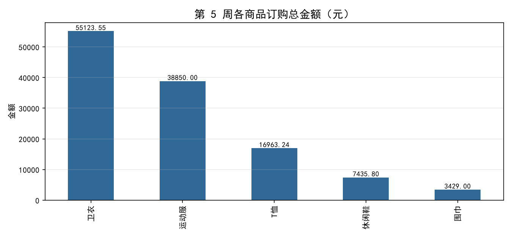
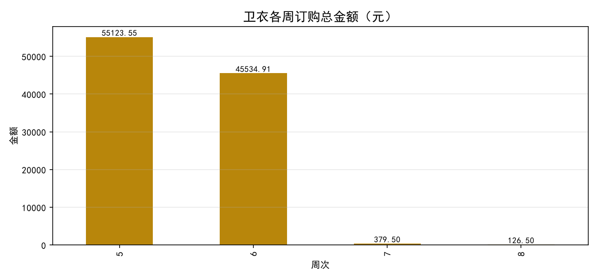
isnull().any() 里「金额」是 False——金额不缺失，只是为 0；缺失和 0 是两回事。df = df.dropna(inplace=True) 会把表变成 None（第 8 章原题）。usecols 下标从 0 开始，[1,2,3,5] 是 订单日期/用户ID/商品名称/数量，不含金额。margins=True 多出 All，画图前 drop('All')。pd.cut 默认左开右闭，边界值要单独讲（本数据 28 天恰好全落档）。订单_lx2.xlsx（24 行 × 6 列）· 限时 20 分钟 · 独立完成，检验「换数据还会不会」
订单_lx2.xlsx 只有 24 行、6 列（订单编号 / 订购日期 / 用户ID / 商品名称 / 单价 / 数量），4 种商品（围巾、大衣、T恤、运动鞋），3 天（2021-02-01—03）。先自己做，再对照下面的参考代码与实测答案。| 题 | 要求 | 本机实测 |
|---|---|---|
| 1 | 读入数据，创建 DataFrame | 24 行 × 6 列 |
| 2 | shape + 前 5 条 | (24, 6) |
| 3 | 数量 > 10 的大衣，按数量降序 | 3 行：28、25、24（都在 02-01） |
| 4 | 围巾最高销售数量 | 30 |
| 5 | 每种商品总数量，降序 | 围巾 110 > 大衣 91 > 运动鞋 81 > T恤 69 |
| 6 | 围巾订单存入 df2 | 7 行 |
| 7 | df2 按数量分档 [0,10,20,30] → 差/中/好，统计各档数量 | 差 2、中 2、好 3；无 NaN（最大 30 落在「好」） |
| 8 | 透视表：每天每种商品总数量（sum + margins） | 3 天 × 4 商品；All 合计 351 |
| 9 | 柱状图展示围巾每日订购数量 | 3 根柱；记得 drop('All') |
| 10 | 导出「订单结果.xlsx」 | 成功，24 行 |
import pandas as pd
import matplotlib.pyplot as plt
plt.rcParams['font.sans-serif'] = ['SimHei']
plt.rcParams['axes.unicode_minus'] = False
df = pd.read_excel(r'D:\订单_lx2.xlsx') # 1
print(df.shape, df.head(5)) # 2
coat = df[(df['商品名称'] == '大衣') & (df['数量'] > 10)]
print(coat[['订购日期', '商品名称', '数量']].sort_values('数量', ascending=False)) # 3
print(df[df['商品名称'] == '围巾']['数量'].max()) # 4
print(df.groupby('商品名称').agg({'数量': 'sum'}).sort_values('数量', ascending=False)) # 5
df2 = df[df['商品名称'] == '围巾'].copy() # 6
df2['等级'] = pd.cut(df2['数量'], bins=[0, 10, 20, 30], labels=['差', '中', '好']) # 7
print(df2['等级'].value_counts().sort_index())
df1 = df.pivot_table(values='数量', index='订购日期', columns='商品名称',
aggfunc='sum', margins=True) # 8
print(df1)
df1['围巾'].drop('All').plot.bar(figsize=(8, 4), color='#2e7d32',
title='围巾每日订购数量') # 9
plt.tight_layout()
plt.savefig('围巾每日订购数量.png', dpi=150)
df.to_excel('订单结果.xlsx', index=False) # 10
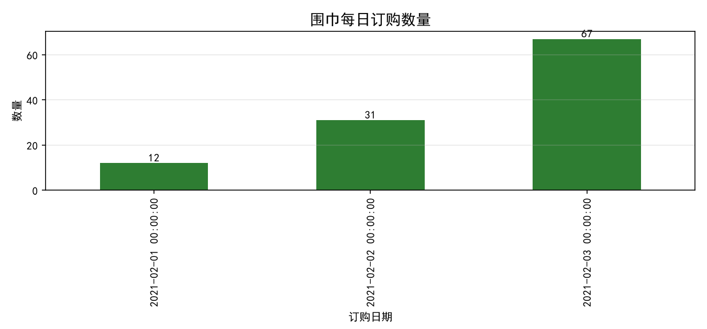
pd.cut 的 bins 上限是 30，本题最大正好 30，落在「好」；若数据出现 31 会变 NaN——bins 要按数据范围取。margins=True 后 df1['围巾'] 里含 All 行，画图前必须 drop('All')，否则图上多一根「All」柱。商品名称 == '大衣' 与 数量 > 10，别漏括号。df1..to_excel（两个点）、aggfunc='sum'，margins=True（全角逗号）。课堂版已修正——顺便告诉学生「答案也会错，跑一遍才算数」。先决定画什么图，再决定怎么画：七类常用图 + figure/axes + 画图四步 + 选型工具
数据清洗完、指标算完，最后一步是把结论画出来——因为人眼对长度、位置、趋势的敏感度远高于数字表格。课件 9.1 先解决两个问题：有哪些图、一张图由哪些元素组成。
| 图表 | 看什么 | 常用写法 | 典型例子 |
|---|---|---|---|
| 折线图 line | 趋势、随时间变化 | plt.plot(x, y) / df.plot() | 各组各季度产量变化 |
| 柱形图 bar | 类别之间比大小 | plt.bar(x, h) / df.plot.bar() | B 组各季度产量对比 |
| 条形图 barh | 排名、类别名长 | plt.barh(y, w) / df.plot(kind='barh') | 各商品订购总数量排名 |
| 饼图 pie | 部分占整体的比例 | plt.pie(v, labels=...) / df.plot.pie() | 各组总产量占比 |
| 散点图 scatter | 两个变量的关系 | plt.scatter(x, y) / df.plot.scatter() | T恤与运动服每日数量关系 |
| 直方图 hist | 一个变量的分布 | plt.hist(data, bins=...) / df.plot.hist() | 学生成绩各分数段人数 |
| 箱线图 box | 分布 + 离群点 | plt.boxplot() / df.plot.box() | 各商品订单金额分布 |
Matplotlib 把「整张画布」叫 figure，把画布里的「坐标系」叫 axes——标题、坐标轴、刻度、图例、网格、数据都是 axes 里的元素。用 plt 的快捷写法时，这些对象是隐式创建的；需要同一张画布放多个子图时，就用 fig, ax = plt.subplots(...) 显式拿到它们。
图 9-5 图表构成示意：figure（画布）→ axes（坐标系）→ 标题 / 坐标轴标签 / 刻度 / 数据 / 图例 / 网格。
| 元素 | 作用 | 常用设置 |
|---|---|---|
| title 标题 | 一句话说清这张图在讲什么 | plt.title('…') / ax.set_title('…') |
| xlabel / ylabel | 坐标轴代表什么、单位是什么 | plt.xlabel('季度')、plt.ylabel('产量（万吨）') |
| xticks / yticks | 刻度位置与标签、旋转角度 | plt.xticks(rotation=20) |
| legend 图例 | 多系列时说明每条线/每种颜色 | plt.legend(df.columns) / ax.legend(ncol=2) |
| grid 网格 | 辅助读数，不宜过密 | plt.grid() / plt.grid(alpha=.3) |
| text / annotate | 数据标签、极值标注、注释 | plt.text(x, y, '文本') |
plt.figure()，多子图用 plt.subplots()。plt.savefig('图.png', dpi=150, bbox_inches='tight') 保存；交互式环境用 plt.show()。保存要写在 show 之前。先选「我要表达什么」，再点按钮，看看推荐图型、写法和最容易踩的坑。课堂上可以让学生先猜再点。
选一个目标，点「推荐图型」。
import pandas as pd
from io import StringIO
csv = """季度,A组,B组,C组
一季度,72,60,82
二季度,65,70,75
三季度,73,62,80
四季度,60,75,68"""
df = pd.read_csv(StringIO(csv), index_col=0)
print(df)
print('shape:', df.shape)
print('总产量:', df.sum(axis=0).to_dict())
A组 B组 C组
季度
一季度 72 60 82
二季度 65 70 75
三季度 73 62 80
四季度 60 75 68
shape: (4, 3)
总产量: {'A组': 270, 'B组': 267, 'C组': 305}
六类图一个个写：中文字体、plot / bar / barh / pie / scatter / hist、标题图例网格与数据标签
Matplotlib 是 Python 最主流的绘图库，pyplot 提供了接近 MATLAB 的快捷接口。课件 9.2 用 6 个例子把最常用的六类图讲完；这里每个例子都是可抄的代码 + 本机实图。图的默认收起：先读代码，点右上角「▶ 运行看结果」再展开本机实测图，课堂上让学生先猜会画成什么样。
import matplotlib.pyplot as plt
plt.rcParams['font.sans-serif'] = ['SimHei'] # Windows 黑体；macOS 可换 'Arial Unicode MS'
plt.rcParams['axes.unicode_minus'] = False # 负号能正常显示
print('设置完成')
import matplotlib
import matplotlib.pyplot as plt
print('当前后端:', matplotlib.get_backend())
plt.rcParams['font.sans-serif'] = ['SimHei']
plt.rcParams['axes.unicode_minus'] = False
print('中文字体:', plt.rcParams['font.sans-serif'])
print('负号正常显示:', plt.rcParams['axes.unicode_minus'])
print('中文标题示例:', '产量（万吨）')
当前后端: tkagg 中文字体: ['SimHei'] 负号正常显示: False 中文标题示例: 产量（万吨）
font.sans-serif 里写对名字；负号变方块就把 axes.unicode_minus 设为 False。例 9-1 单系列：B 组四个季度的产量。x 用索引（季度），y 用一列数据。
import pandas as pd
import matplotlib.pyplot as plt
plt.rcParams['font.sans-serif'] = ['SimHei']
plt.rcParams['axes.unicode_minus'] = False
df = pd.read_csv('产量.csv', index_col=0, encoding='gbk')
x = df.index # 索引作为 x 轴
y = df['B组'].values # 一列数据作为 y 轴
plt.figure() # 创建画布
plt.plot(x, y, marker='o')
plt.title('B组各季度产量')
plt.ylabel('产量（万吨）')
plt.xlabel('季度')
plt.grid(alpha=0.3)
plt.show()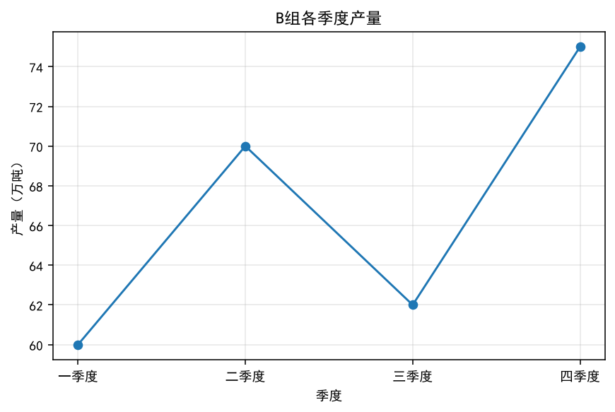
例 9-2 多系列：三组一起画，用列名做图例。
import pandas as pd
import matplotlib.pyplot as plt
plt.rcParams['font.sans-serif'] = ['SimHei']
df = pd.read_csv('产量.csv', index_col=0, encoding='gbk')
plt.figure()
for col in df.columns:
plt.plot(df.index, df[col], marker='o', label=col)
plt.legend() # 显示图例
plt.title('三个组各季度产量比较图')
plt.ylabel('产量（万吨）')
plt.grid(alpha=0.3)
plt.show()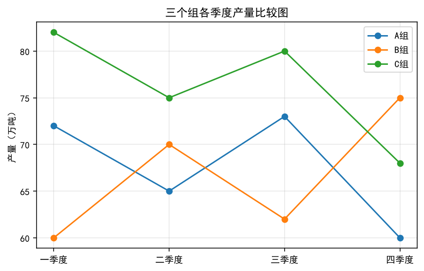
import pandas as pd
from io import StringIO
csv = """季度,A组,B组,C组
一季度,72,60,82
二季度,65,70,75
三季度,73,62,80
四季度,60,75,68"""
df = pd.read_csv(StringIO(csv), index_col=0)
b = df['B组']
print('B组各季度:', b.tolist())
print('合计:', b.sum())
print('最高:', b.max(), '→', b.idxmax())
print('最低:', b.min(), '→', b.idxmin())
B组各季度: [60, 70, 62, 75] 合计: 267 最高: 75 → 四季度 最低: 60 → 一季度
import pandas as pd
import matplotlib.pyplot as plt
plt.rcParams['font.sans-serif'] = ['SimHei']
df = pd.read_csv('产量.csv', index_col=0, encoding='gbk')
data = df['B组']
fig = plt.figure(figsize=(9, 4))
ax1 = fig.add_subplot(1, 2, 1) # 第 1 个子图：柱形图
ax1.bar(data.index, data.values)
ax1.set_title('柱形图：B组各季度产量')
ax1.set_ylabel('产量（万吨）')
for x, h in zip(data.index, data.values):
ax1.text(x, h, h, ha='center', va='bottom')
ax2 = fig.add_subplot(1, 2, 2) # 第 2 个子图：条形图
ax2.barh(data.index, data.values)
ax2.set_title('条形图：B组各季度产量')
ax2.set_xlabel('产量（万吨）')
for y, w in zip(data.index, data.values):
ax2.text(w, y, w, va='center')
plt.show()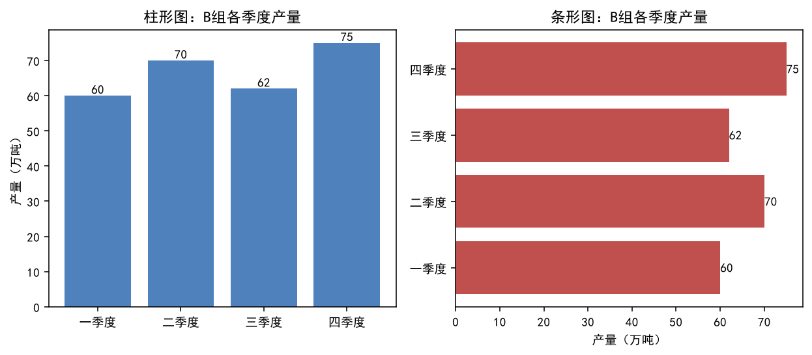
import pandas as pd
from io import StringIO
csv = """季度,A组,B组,C组
一季度,72,60,82
二季度,65,70,75
三季度,73,62,80
四季度,60,75,68"""
df = pd.read_csv(StringIO(csv), index_col=0)
for q, h in df['B组'].items():
print(q, ':', h, '万吨')
print('合计:', df['B组'].sum())
一季度 : 60 万吨 二季度 : 70 万吨 三季度 : 62 万吨 四季度 : 75 万吨 合计: 267
import pandas as pd
import matplotlib.pyplot as plt
plt.rcParams['font.sans-serif'] = ['SimHei']
df = pd.read_csv('产量.csv', index_col=0, encoding='gbk')
data = df.sum(axis=0) # 每组四个季度合计
plt.figure()
plt.pie(data, explode=(0, 0, 0.075), labels=data.index, autopct='%0.0f%%')
plt.title('各组总产量比例图', fontdict={'fontsize': 16, 'color': 'red'})
plt.show()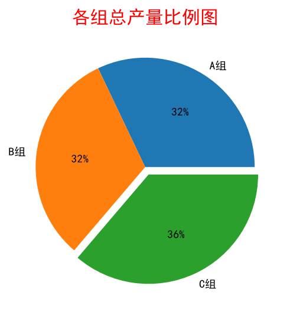
import pandas as pd
from io import StringIO
csv = """季度,A组,B组,C组
一季度,72,60,82
二季度,65,70,75
三季度,73,62,80
四季度,60,75,68"""
df = pd.read_csv(StringIO(csv), index_col=0)
tot = df.sum(axis=0)
print('各组总产量:', tot.to_dict())
print('全部合计:', tot.sum())
for k, v in tot.items():
print(k, ':', v, '(', round(v / tot.sum() * 100, 1), '%)')
各组总产量: {'A组': 270, 'B组': 267, 'C组': 305}
全部合计: 842
A组 : 270 ( 32.1 %)
B组 : 267 ( 31.7 %)
C组 : 305 ( 36.2 %)
import numpy as np
import matplotlib.pyplot as plt
plt.rcParams['font.sans-serif'] = ['SimHei']
data = np.array([70, 80, 85, 68, 84, 85, 76, 92, 87, 72,
52, 79, 73, 84, 80, 79, 67, 90, 78, 77])
plt.figure()
plt.scatter(range(1, data.size + 1), data)
plt.title('学生成绩分布图')
plt.xlabel('学生')
plt.ylabel('成绩')
plt.grid(alpha=0.4)
plt.xticks(range(1, data.size + 1))
min_y = np.min(data)
pos_x = np.argmin(data)
plt.text(pos_x + 1, min_y, str(min_y) + '（最低）', color='red')
plt.show()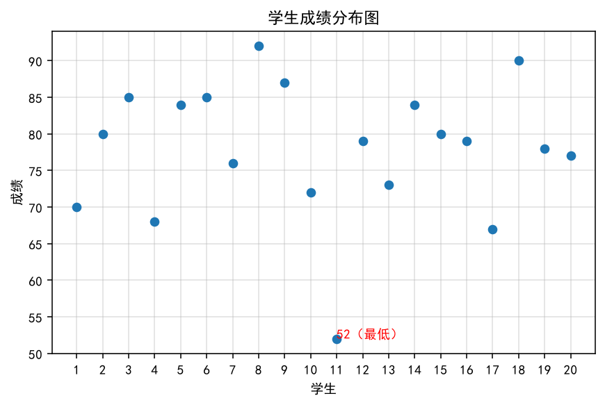
import numpy as np
data = np.array([70, 80, 85, 68, 84, 85, 76, 92, 87, 72,
52, 79, 73, 84, 80, 79, 67, 90, 78, 77])
print('人数:', data.size)
print('最低:', data.min(), '在第', int(data.argmin()) + 1, '个')
print('最高:', data.max(), '在第', int(data.argmax()) + 1, '个')
print('平均:', round(float(data.mean()), 2))
人数: 20 最低: 52 在第 11 个 最高: 92 在第 8 个 平均: 77.9
import numpy as np
import matplotlib.pyplot as plt
plt.rcParams['font.sans-serif'] = ['SimHei']
data = np.array([70, 80, 85, 68, 84, 85, 76, 92, 87, 72,
52, 79, 73, 84, 80, 79, 67, 90, 78, 77])
bins = [50, 60, 70, 80, 90, 100]
plt.figure()
nums, bins_, _ = plt.hist(data, bins=bins, facecolor='g', alpha=0.65)
plt.title('各分数段的人数统计图')
plt.ylabel('人数')
for i, n in enumerate(nums):
plt.text(bins[i], n, int(n))
plt.show()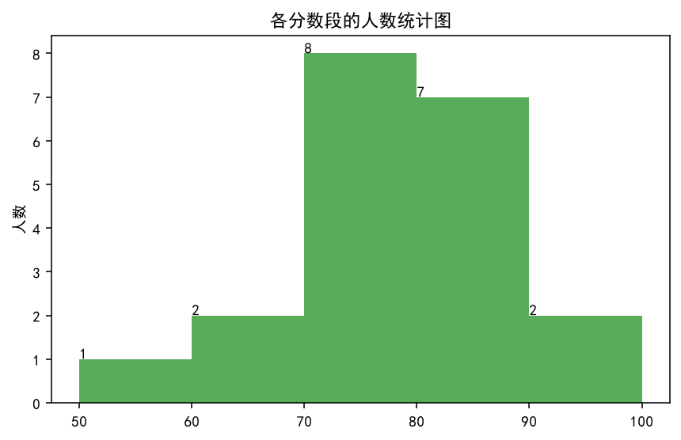
import numpy as np
data = np.array([70, 80, 85, 68, 84, 85, 76, 92, 87, 72,
52, 79, 73, 84, 80, 79, 67, 90, 78, 77])
nums, edges = np.histogram(data, bins=[50, 60, 70, 80, 90, 100])
for i, n in enumerate(nums):
print('[' + str(edges[i]) + ', ' + str(edges[i+1]) + '):', n, '人')
print('合计:', nums.sum())
[50, 60): 1 人 [60, 70): 2 人 [70, 80): 8 人 [80, 90): 7 人 [90, 100): 2 人 合计: 20
plt.savefig('成绩_直方图.png', dpi=150, bbox_inches='tight') # 保存
plt.show() # 交互环境里显示
plt.show() 会阻塞或弹窗；保存一定要写在 show 之前，否则拿到的是空白图。批量出图可用 matplotlib.use('Agg') 关掉窗口。一行 plot 出图：Series/DataFrame 的 kind 参数、索引即 x 轴、多列多系列与图例
Pandas 把 Matplotlib 包了一层：df.plot() 默认按索引画折线，多列自动画多系列；kind= 换图型。课件 9.3 的例子都建立在前一步的 GroupBy / pivot_table 结果上——数据整理好，画图只有一行。
import pandas as pd
from io import StringIO
csv = """季度,A组,B组,C组
一季度,72,60,82
二季度,65,70,75
三季度,73,62,80
四季度,60,75,68"""
df = pd.read_csv(StringIO(csv), index_col=0)
print('索引（默认 x 轴）:', df.index.tolist())
print('列（默认系列/图例）:', df.columns.tolist())
print('df.plot() 会画', df.shape[1], '条线')
索引（默认 x 轴）: ['一季度', '二季度', '三季度', '四季度'] 列（默认系列/图例）: ['A组', 'B组', 'C组'] df.plot() 会画 3 条线
import pandas as pd
import matplotlib.pyplot as plt
plt.rcParams['font.sans-serif'] = ['SimHei']
df = pd.read_csv('产量.csv', index_col=0, encoding='gbk')
df['B组'].plot()
plt.title('B组各季度产量')
plt.ylabel('产量（万吨）')
plt.show()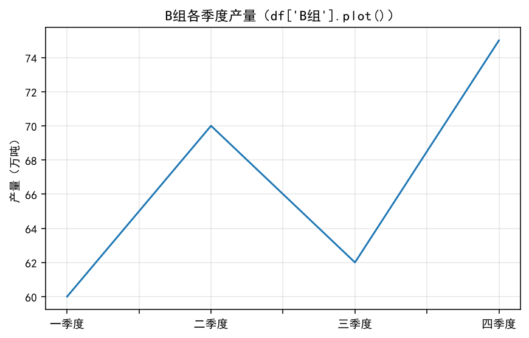
import pandas as pd
import matplotlib.pyplot as plt
plt.rcParams['font.sans-serif'] = ['SimHei']
df = pd.read_csv('产量.csv', index_col=0, encoding='gbk')
df.plot.bar()
plt.title('三个组各季度产量比较图')
plt.ylabel('产量（万吨）')
plt.xticks(rotation=20)
plt.show()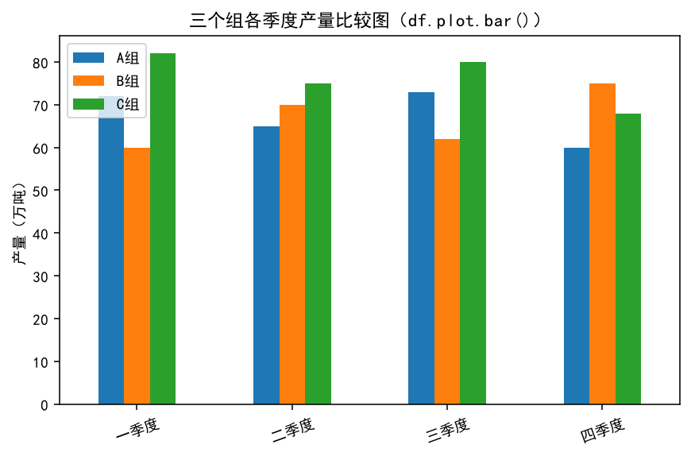
import pandas as pd
import matplotlib.pyplot as plt
plt.rcParams['font.sans-serif'] = ['SimHei']
df = pd.read_excel('订单_new.xlsx')
df2 = df.groupby('商品名称').agg({'数量': 'sum'})
df2 = df2.sort_values(by='数量') # 条形图按大小排序更好读
df2['数量'].plot(kind='barh')
plt.title('商品订购总数量比较图')
plt.show()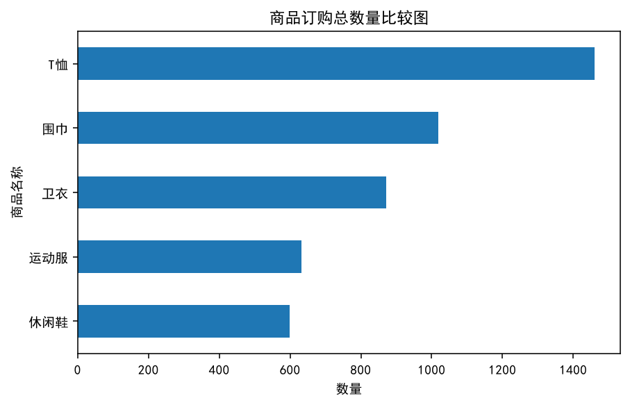
import pandas as pd
import matplotlib.pyplot as plt
plt.rcParams['font.sans-serif'] = ['SimHei']
df = pd.read_excel('订单_new.xlsx')
df2 = df.groupby('商品名称').agg({'数量': 'sum'})
df2 = df2.sort_values(by='数量', ascending=False)
df2['数量'].plot.pie(autopct='%0.0f%%')
plt.title('各商品的订购总数量比例图')
plt.ylabel('')
plt.show()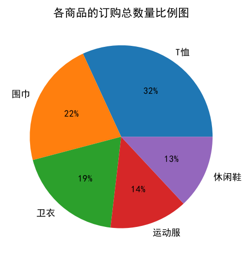
import pandas as pd
from io import StringIO
csv = """订单编号,订单日期,用户ID,商品名称,单价,数量,金额
302001,2021-02-01,137401,围巾,21.6,12,259.2
302002,2021-02-01,177562,运动服,210.0,7,1470.0
302003,2021-02-01,133422,T恤,55.93,24,1342.32
302004,2021-02-05,138462,运动服,178.5,24,4284.0
302005,2021-02-05,158949,T恤,65.8,14,921.2
302006,2021-02-08,120957,卫衣,126.5,15,1897.5
302006,2021-02-08,120957,卫衣,126.5,15,1897.5
302008,2021-02-12,186059,T恤,65.8,5,329.0
302009,2021-02-15,199357,,,,540.0
302010,2021-02-20,149590,休闲鞋,162.0,30,4860.0
302011,2021-02-25,149590,运动服,178.5,0,0.0
302012,2021-02-28,137401,围巾,21.6,25,540.0"""
df = pd.read_csv(StringIO(csv), parse_dates=['订单日期'])
g = df.groupby('商品名称').agg({'数量': 'sum', '金额': 'sum'})
g = g.sort_values(by='数量', ascending=False)
print(g)
print('数量合计:', g['数量'].sum())
数量 金额
商品名称
T恤 43.0 2592.52
围巾 37.0 799.20
运动服 31.0 5754.00
卫衣 30.0 3795.00
休闲鞋 30.0 4860.00
数量合计: 171.0
import pandas as pd
import matplotlib.pyplot as plt
plt.rcParams['font.sans-serif'] = ['SimHei']
df = pd.read_excel('订单_new.xlsx')
df2 = df[df.商品名称 == '围巾'].groupby('订单日期').agg({'数量': 'sum'})
bins = [0, 20, 40, 60, 80, 100]
df2['数量'].plot.hist(bins=bins)
plt.title('围巾每日订购数量的直方图')
plt.ylabel('频数')
plt.show()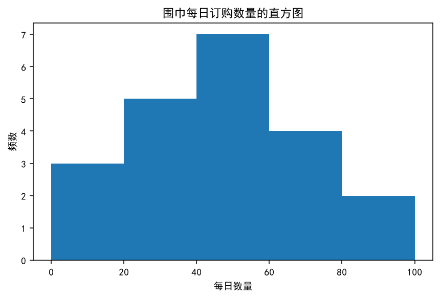
import pandas as pd
import matplotlib.pyplot as plt
plt.rcParams['font.sans-serif'] = ['SimHei']
df = pd.read_csv('产量.csv', index_col=0, encoding='gbk')
df['B组'].plot.box()
plt.title('B组各季度产量箱线图')
plt.show()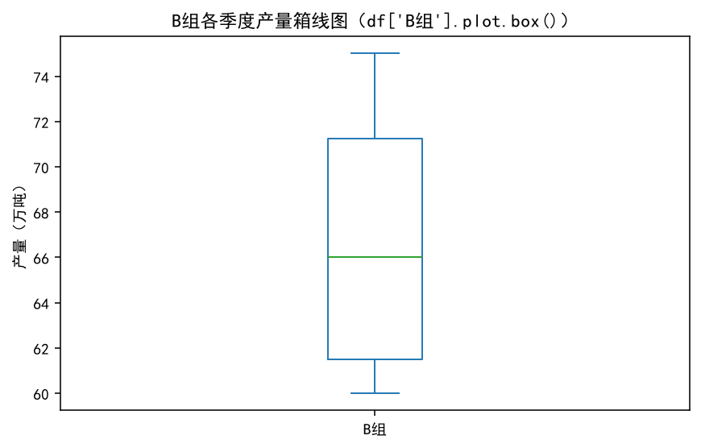
import numpy as np
qty = [12, 31, 77, 30, 29, 42, 57, 45, 93, 15, 59,
45, 56, 82, 35, 49, 27, 63, 75, 78, 19]
q = np.array(qty)
print('天数:', q.size, '合计:', q.sum(), '最多:', q.max(), '最少:', q.min())
print('均值:', round(float(q.mean()), 2), '中位数:', float(np.median(q)))
nums, edges = np.histogram(q, bins=[0, 20, 40, 60, 80, 100])
for i, n in enumerate(nums):
print('(' + str(edges[i]) + ', ' + str(edges[i+1]) + ']:', n, '天')
天数: 21 合计: 1019 最多: 93 最少: 12 均值: 48.52 中位数: 45.0 (0, 20]: 3 天 (20, 40]: 5 天 (40, 60]: 7 天 (60, 80]: 4 天 (80, 100]: 2 天
import pandas as pd
import matplotlib.pyplot as plt
plt.rcParams['font.sans-serif'] = ['SimHei']
df = pd.read_excel('订单_new.xlsx')
df2 = df.pivot_table(values='数量', index='周次', columns='商品名称', aggfunc='sum')
df2.plot(kind='bar')
plt.title('每周各种商品的订购总数量比较图')
plt.legend(ncol=2)
plt.show()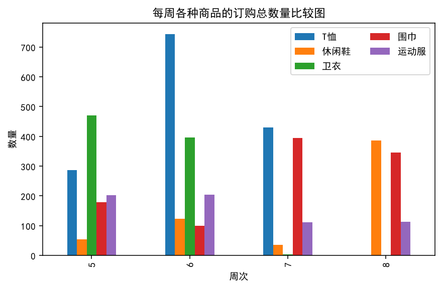
用订单数据走完「数据准备 → 选图 → 画图 → 解读」：折线极值、散点看关系、气泡看三重信息、箱线看分布
课件 9.4 是整章的收口：数据还是那份订单，问题换成业务问题，依次用折线、散点、气泡、箱线来回答。顺序永远是 先算清数据 → 再选图 → 最后调样式和结论。
import pandas as pd
import matplotlib.pyplot as plt
plt.rcParams['font.sans-serif'] = ['SimHei']
df = pd.read_excel('订单_new.xlsx')
df2 = df.groupby('订单日期').agg({'金额': 'sum'})
df2['金额'].plot()
plt.title('2月份每日订购金额变化图')
vals = df2['金额']
plt.text(vals.idxmin(), vals.min(), str(round(vals.min(), 2)), color='m')
plt.text(vals.idxmax(), vals.max(), str(round(vals.max(), 2)), color='r')
plt.show()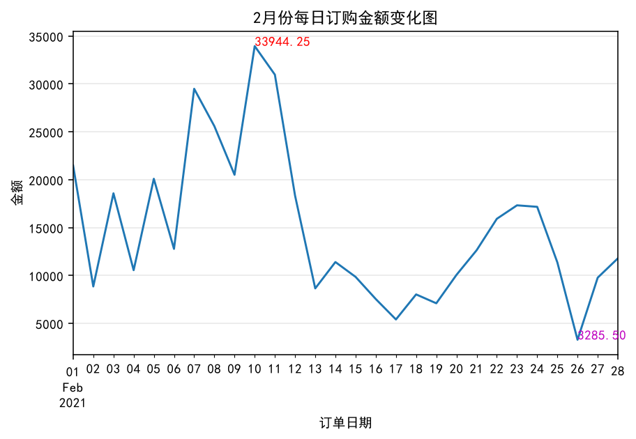
import numpy as np
amt = [21479.42, 8849.02, 18573.88, 10549.5, 20090.12, 12773.53, 29486.12,
25589.18, 20509.51, 33944.25, 30961.58, 18333.35, 8645.58, 11399.13,
9848.77, 7536.91, 5403.4, 8018.89, 7092.1, 10057.7, 12634.71,
15912.72, 17320.14, 17163.9, 11358.72, 3285.5, 9768.6, 11786.4]
a = np.array(amt)
print('天数:', a.size)
print('合计:', round(float(a.sum()), 2))
print('最高:', round(float(a.max()), 2), '（第', int(a.argmax()) + 1, '天）')
print('最低:', round(float(a.min()), 2), '（第', int(a.argmin()) + 1, '天）')
print('平均:', round(float(a.mean()), 2))
天数: 28 合计: 418372.63 最高: 33944.25 （第 10 天） 最低: 3285.5 （第 26 天） 平均: 14941.88
import pandas as pd
import matplotlib.pyplot as plt
plt.rcParams['font.sans-serif'] = ['SimHei']
df = pd.read_excel('订单_new.xlsx')
df2 = df.pivot_table(values='数量', index='订单日期', columns='商品名称',
aggfunc='sum', fill_value=0).reset_index()
df2.plot.scatter(x='订单日期', y='运动服')
plt.xticks(rotation=45, fontsize=8)
plt.title('运动服的每日订购数量变化图')
plt.show()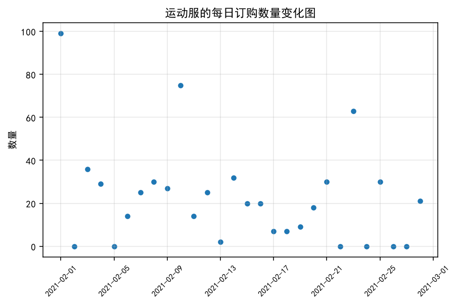
import pandas as pd
import matplotlib.pyplot as plt
plt.rcParams['font.sans-serif'] = ['SimHei']
df = pd.read_excel('订单_new.xlsx')
df2 = df.pivot_table(values='数量', index='订单日期', columns='商品名称',
aggfunc='sum', fill_value=0)
df2.plot.scatter(x='T恤', y='运动服')
plt.title('T恤和运动服的每日订购数量关系图')
plt.show()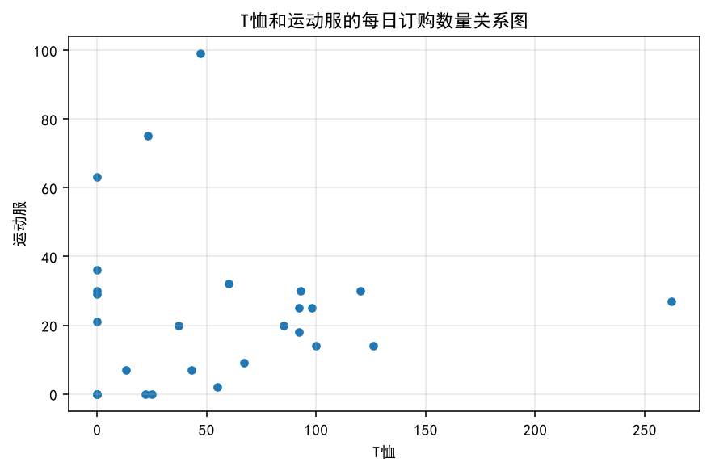
import numpy as np
t = [47, 22, 0, 0, 25, 100, 92, 120, 262, 23, 126, 98, 55, 60,
85, 37, 13, 43, 67, 92, 93, 0, 0, 0, 0, 0, 0, 0]
s = [99, 0, 36, 29, 0, 14, 25, 30, 27, 75, 14, 25, 2, 32,
20, 20, 7, 7, 9, 18, 30, 0, 63, 0, 30, 0, 0, 21]
print('相关系数:', round(float(np.corrcoef(t, s)[0, 1]), 3))
print('（>0 正相关，<0 负相关，接近 0 说明线性关系弱）')
相关系数: 0.05 （>0 正相关，<0 负相关，接近 0 说明线性关系弱）
import pandas as pd
import matplotlib.pyplot as plt
plt.rcParams['font.sans-serif'] = ['SimHei']
df = pd.read_excel('订单_new.xlsx')
df2 = df.groupby('订单日期').agg({'金额': 'sum', '数量': 'sum'}).reset_index()
df2.plot.scatter(x='订单日期', y='金额', s=df2['数量'] * 2, c='g', alpha=0.5)
plt.title('每日订购金额和订购数量变化图')
plt.show()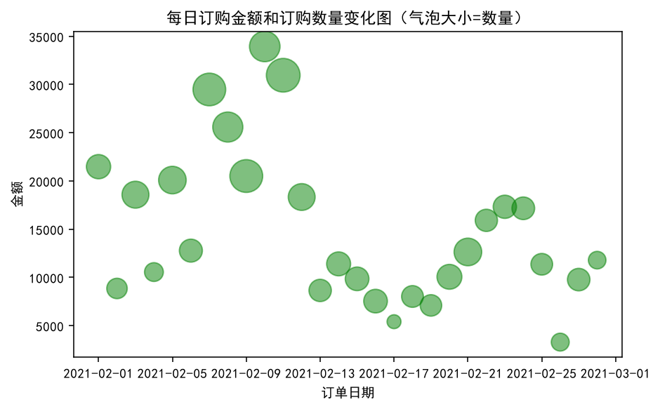
s 是面积不是半径，数值差一个数量级时可以乘系数调整；气泡别太密，必要时加 alpha。import pandas as pd
import matplotlib.pyplot as plt
plt.rcParams['font.sans-serif'] = ['SimHei']
df = pd.read_excel('订单_new.xlsx')
df.boxplot(column='金额', by='商品名称')
fig = plt.gcf()
fig.suptitle('') # 去掉 pandas 自动加的副标题
plt.title('商品订单金额分布图') # 课件原注释把这行吞掉了，这里修正
plt.show()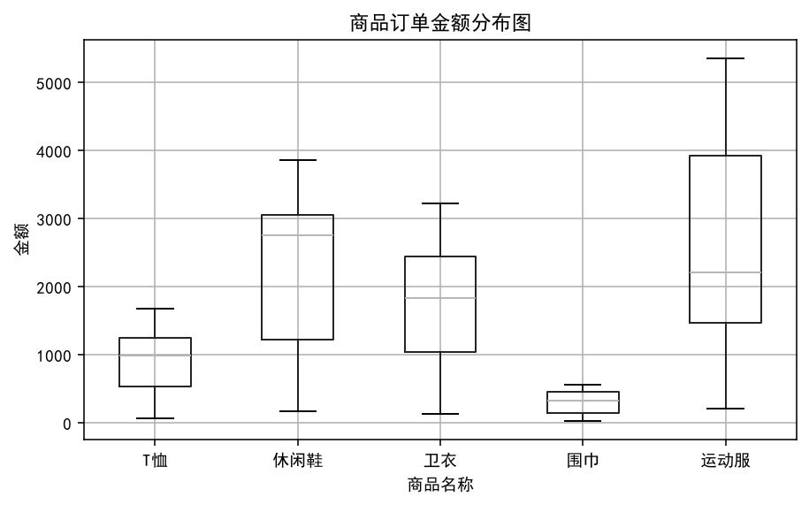
每张图先写一句话结论（谁最高、哪天最低、有没有关系），再想「这张图能不能支撑这句话」。
均值相同不代表分布相同：箱线图/直方图能看出偏态与离群点，别只报平均数。
两套练习的数据 + 参考答案脚本 + 第 9 章可视化示例代码与数据 + 页面精简数据 + 说明文档 + 一次打包
下面这些文件是三次课用到的全部材料：复习与两套练习的数据、页面示例用的精简数据，以及第 9 章可视化的教材示例代码与产量数据。所有脚本在本机（Python 3.14.7 + pandas 3.0.5 + matplotlib 3.11.2）跑通，下载后直接 python 文件名.py 即可复现。
| 文件名（点击下载） | 内容 | 大小 |
|---|---|---|
| 订单.xlsx | 练习一原始数据：310 行 × 7 列，含缺失值、0 金额、异常值（对应第 1—21 题） | 90.0 KB |
| 订单_new.xlsx | 练习一第 18—20 题：305 行 × 9 列，多出「地区编码」「周次」两列；也是第 9 章多数示例的数据 | 18.3 KB |
| 订单_lx2.xlsx | 练习二数据：24 行 × 6 列，4 种商品、3 天订单 | 10.1 KB |
| 精简订单数据.csv | 页面示例统一使用的 12 行精简订单（UTF-8），便于对照页面代码 | 624 B |
| 文件名（点击下载） | 内容 | 大小 |
|---|---|---|
| 练习1_参考答案.py | 练习一 21 小问完整答案：每题打印题干、代码与结果，最后生成两张图和订单结果.xlsx | 5.6 KB |
| 练习2_参考答案.py | 练习二 10 小问完整答案：查询、统计、分档、透视、柱状图、导出 | 2.7 KB |
| README_使用说明.md | 文件清单、运行方法（复习与可视化两套）、环境要求与两个注意点（pandas 3 的 cut / margins） | 3.5 KB |
| 文件名（点击下载） | 内容 | 大小 |
|---|---|---|
| 产量.csv | 第 9 章示例 9-1—9-4、9-7—9-9 用的产量数据：4 个季度 × A/B/C 三组（GBK 编码，index_col=0） | 82 B |
| 第9章_可视化示例代码.py | 教材 chpt9-1—18 共 18 段示例代码合集，与页面第四—七节一一对应；运行前把 产量.csv、订单_new.xlsx 放同目录 | 12.6 KB |
把复习+练习的 7 个文件打成一个 zip（4 个数据 + 2 个答案脚本 + 说明），解压后即可使用；可视化示例代码与产量数据在上一小节单独下载。
pip install pandas openpyxl matplotlib（本机实测 pandas 3.0.5 + matplotlib 3.11.2）。答案脚本按文件名找数据，所以数据文件要和脚本放在同一个文件夹；绘图示例用 Windows 的 SimHei 字体，其他系统改 font.sans-serif 即可。复习用：能自己把每一条讲出来，这一节才算过
loc 一步定位、括号包住每个条件、inplace 不接返回值、透视写 aggfunc='sum'、画图前 drop All、merge 先查键。df[0] 不是第一行（KeyError: 0），按行要用 loc / iloc。and or：TypeError 或 ValueError；用 & | ~ 且每个条件加括号。df[df.x > 1]['y'] = 0 链式赋值改不动（pandas 3 写时复制）。df = df.dropna(inplace=True) 会让 df 变成 None。金额 == 0 不等于 isnull()。pivot_table 不写 aggfunc 默认算均值。margins=True 的 All 行/列，画图前要 drop('All')。pd.cut 默认左开右闭，bins 覆盖不到的值变 NaN。merge 右表键重复会让行数变多；先查唯一性。encoding='gbk'。plt.rcParams['font.sans-serif']=['SimHei'] 且 plt.rcParams['axes.unicode_minus']=False（负号也要管）。plt.savefig(...) 保存，plt.show() 在无界面环境没有窗口。订单结果.xlsx、第 5 周柱状图、卫衣各周柱状图、围巾每日柱状图。12-11（第 15 周，4 学时）：第 9 章 数据可视化 —— 9.1 图表类型与图表构成、9.2 Matplotlib（折线 / 柱状 / 条形 / 饼 / 散点 / 直方 / 箱线）、9.3 Pandas 的 plot(kind=...)，每个例子都对照页面上本机实图讲。
12-18（第 16 周，2 学时）：9.4 可视化应用案例 —— 用订单数据把「趋势 → 关系 → 三维 → 分布」串成一套图，最后安排期末复习。今天的两张柱状图就是这一章的起点：数据准备好了，下一步是「选对图、调好样式、把结论画出来」。